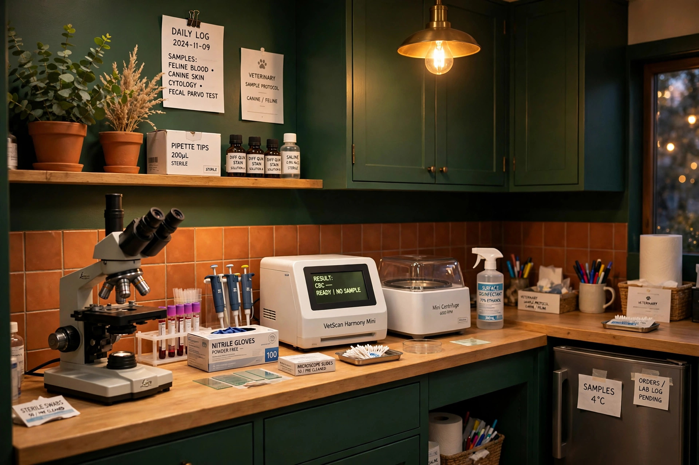
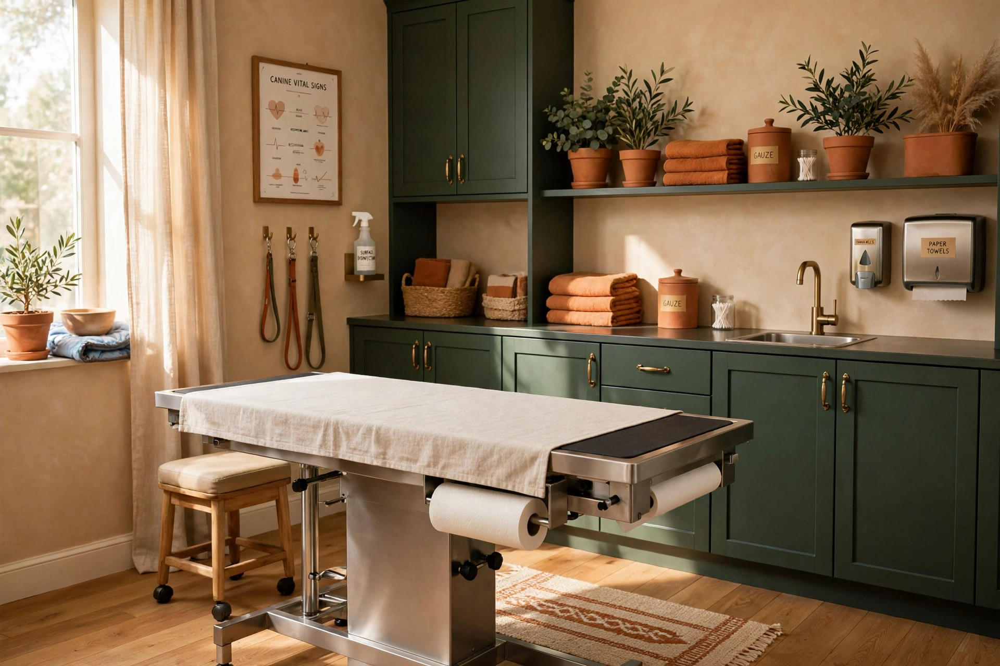
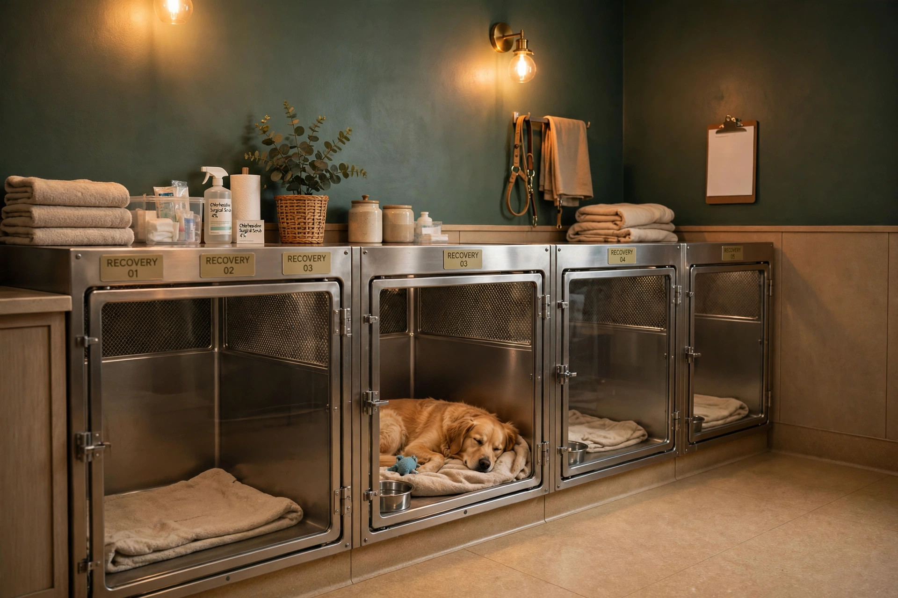

Espacios diseñados conforme a normativas de bioseguridad, climatización y reducción de estrés sensorial.

Resultados inmediatos — Laboratorio clínico interno
Equipo para análisis sanguíneos, coprológicos y citologías con resultados inmediatos.
- Biometría hemática y perfiles bioquímicos en el sitio
Imagen de muestra generada con IA — foto real de la clínica: [a confirmar].

Quirófano totalmente equipado
Instrumental rigurosamente esterilizado por autoclave, equipo de monitoreo anestésico multiparamétrico.
- Cirugía preventiva, de tejidos blandos y emergencias
Imagen de muestra generada con IA — foto real de la clínica: [a confirmar].

Sala de hospitalización y monitoreo
Espacios higiénicos y climatizados individuales para caninos, felinos y exóticos en módulos separados.
- Fluidoterapia controlada y vigilancia clínica continua
Imagen de muestra generada con IA — foto real de la clínica: [a confirmar].
Sala de radiografía y ecografía
Diagnóstico por imagen con mínima manipulación y radiación controlada. Estudios no invasivos y entrega de placas digitales.
Farmacia veterinaria interna
Dispensario con medicamentos prescritos, antiparasitarios de amplio espectro, antibióticos dosificados y productos de cuidado. Dosis exactas por peso y especie.
Consultar disponibilidad de medicamento →
Áreas separadas por especie
Módulos físicamente separados para caninos, felinos y exóticos, reduciendo el estrés ambiental durante la estancia.